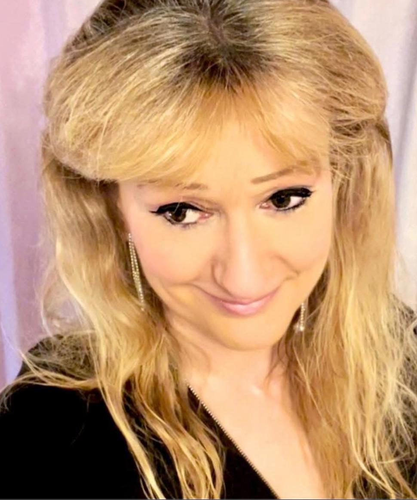
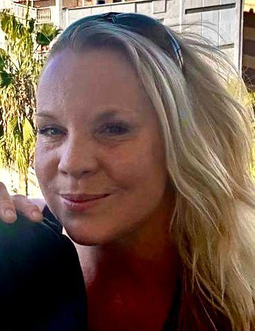

Karen Baldwin
Creator & Co-Author
Founder of Happy Hooves, Karen trained as a mental health nurse before specialising in Cognitive Behavioural Therapy at King's College London and the Maudsley Hospital. An experienced therapist, lecturer and trainer, her lifelong love of horses and dedication to mental wellbeing come together in the stories of Hoofprints on the Hill.
Aisling Chada
Author
A Primary School Teacher with a First-Class Honours Bachelor of Education degree from St. Mary's University, Aisling has taught children in the UK and internationally. Now working as an Inclusion Officer, her experience in education, inclusion and children's mental health helped shape the stories to resonate meaningfully with young readers.

Jessica Hill
Illustrator
An equine artist from South Devon, England, Jessica has lifelong experience in equestrian art and works across a range of mediums and montage techniques. Her distinctive style blends accuracy with creativity, bringing the ponies and animals to life with warmth, spirit and authenticity.